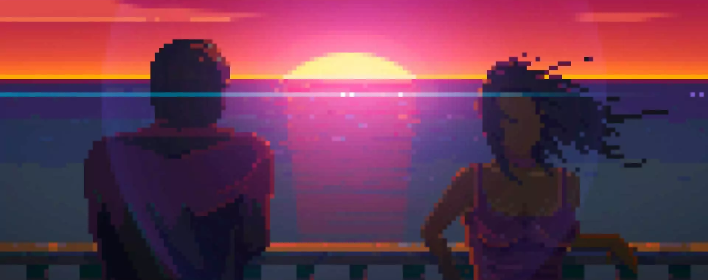

Reseña
Estrategia macabra y sigilo en una fiesta mortal
Cansado de las fiestas ruidosas, controlas a un asesino que debe acabar con todos los invitados de la fiesta sin ser detectado. Cada nivel ofrece múltiples formas creativas de eliminar a las víctimas, combinando sigilo, trampas y acción en escenarios variados y semialeatorios.

Eliminación estratégica
El jugador debe evitar ser visto mientras elimina a los invitados usando cuchillos, trampas o el entorno. La clave está en planificar ataques silenciosos y aprovechar elementos del escenario para causar caos sin levantar sospechas.
Trampas
Usa objetos del escenario para eliminar enemigos de forma indirecta
Camuflaje y distracción
Moverse entre los invitados y usar elementos del entorno para pasar desapercibido y evitar alertar a la policía
Arte y banda sonora
Party Hard presenta un estilo pixel art con estética oscura y macabra que combina humor negro con violencia gráfica. Los escenarios están llenos de detalles y tene una estética retro y waporwave. La banda sonora recuerda a los 80's sin dejar de ser tensa, con temas que aumentan la sensación de urgencia y suspenso durante la partida, complementando la atmósfera de caos y sigilo en las fiestas. Los efectos sonoros enfatizan los momentos de acción y las reacciones de los personajes, reforzando la inmersión en esta experiencia divertidamente retorcida.
Puntos fuertes
- Humor negro y atmósfera única
- Controles simples pero efectivos
- Alta rejugabilidad
Puntos débiles
- Puede volverse repetitivo tras varias partidas
- Algunos niveles pueden frustrar por la dificultad o aleatoriedad
- Historia poco desarrollada y narrativa limitada